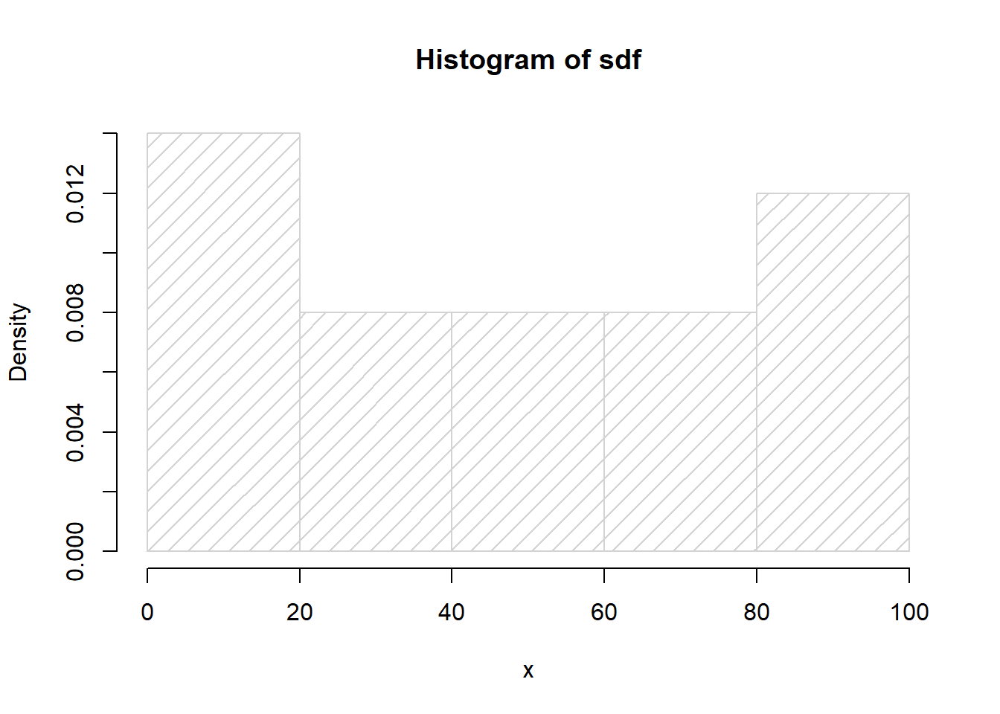

Bab 16 Grouping
for (apaini in 9:23)
{
print(apaini)
}## [1] 9
## [1] 10
## [1] 11
## [1] 12
## [1] 13
## [1] 14
## [1] 15
## [1] 16
## [1] 17
## [1] 18
## [1] 19
## [1] 20
## [1] 21
## [1] 22
## [1] 23print (1:10)## [1] 1 2 3 4 5 6 7 8 9 10makanan<-c("jagung", "bewan", "ketela pohon", "bengkoang", "pisang", " ")
makanan_panjangnya<-rep(NA, length(makanan))
makanan_panjangnya## [1] NA NA NA NA NA NAnames(makanan_panjangnya)<-makanan
makanan_panjangnya## jagung bewan ketela pohon bengkoang pisang
## NA NA NA NA NA NAfor (a in makanan){
makanan_panjangnya[a]<-nchar(a)
}
makanan_panjangnya## jagung bewan ketela pohon bengkoang pisang
## 6 5 12 9 6 1ikan<-c("patin", "nila", 'lele', "mujair", "sotong")
for (i in 1:5)
{
print(paste("Ikan", i, "namanya", ikan[i]))
} ## [1] "Ikan 1 namanya patin"
## [1] "Ikan 2 namanya nila"
## [1] "Ikan 3 namanya lele"
## [1] "Ikan 4 namanya mujair"
## [1] "Ikan 5 namanya sotong"ikan<-c(nama=c("patin", "nila", 'lele', "mujair", "sotong"),
habitat=c("laut", "tawar","tawar","tawar","laut" ))
for (i in 1:5)
{
print(paste("Ikan", i, "namanya", ikan[c(1,i)], "hidupnya di", ikan[c(2,i)]))
} ## [1] "Ikan 1 namanya patin hidupnya di nila"
## [2] "Ikan 1 namanya patin hidupnya di patin"
## [1] "Ikan 2 namanya patin hidupnya di nila"
## [2] "Ikan 2 namanya nila hidupnya di nila"
## [1] "Ikan 3 namanya patin hidupnya di nila"
## [2] "Ikan 3 namanya lele hidupnya di lele"
## [1] "Ikan 4 namanya patin hidupnya di nila"
## [2] "Ikan 4 namanya mujair hidupnya di mujair"
## [1] "Ikan 5 namanya patin hidupnya di nila"
## [2] "Ikan 5 namanya sotong hidupnya di sotong"ikan[c(2,1)]## nama2 nama1
## "nila" "patin"as.numeric(TRUE)## [1] 1as.numeric(FALSE)## [1] 0print(1>1)## [1] FALSEprint(1>0)## [1] TRUEprint(1>2)## [1] FALSEprint(1>=1)## [1] TRUEprint(5!=1)## [1] TRUEtoCheck<-1
if(toCheck==1){
print("Hello")
}## [1] "Hello"check.bool<-function(x)
{
if(x==1)
{
print("Hello")
}else if (x==0){
print("goodbye")
}else
print("confused")
}check.bool(TRUE)## [1] "Hello"check.bool(0)## [1] "goodbye"check.bool("Mongket")## [1] "confused"gunakan_switch<-function(x)
{
switch(x,
"1"="Yutub",
"2"="Twitter",
"3"="Facebook",
"4"="Instagram",
"5"="VK",
)}
gunakan_switch("3")## [1] "Facebook"gunakan_switch("5")## [1] "VK"The R software provides access to the uniform distribution by the dunif(), punif(), qunif() and runif() functions. Apply the help() function on these functions for further information.
# generate n random numbers between the default values of 0 and 1
sdf<-runif (25, min = 0, max = 100)
sdf## [1] 97.7552124 88.5085043 74.7113840 9.9660231 6.6144352 77.6326959
## [7] 93.6328252 46.3840602 10.4600019 28.1796802 0.3072537 5.6553908
## [13] 8.8009696 55.1530010 51.9221288 39.4921771 55.1396610 82.3262505
## [19] 76.3016614 22.0393053 93.4048307 36.4417480 19.0471082 61.4801904
## [25] 91.3489739hist(sdf, freq = FALSE, xlab = 'x', density = 10)
random_dgn_kembalian <- sample(1:10, 7, replace=T)
random_dgn_kembalian## [1] 9 2 10 2 6 4 5random_tnp_kembalian <- sample(1:10, 5, replace=F)
random_tnp_kembalian## [1] 4 9 3 10 2sample(state.name, 10)## [1] "Minnesota" "Massachusetts" "Delaware" "Wyoming"
## [5] "Virginia" "Connecticut" "Kansas" "South Dakota"
## [9] "Arkansas" "Nevada"# paste together string a & b paste (a, b)
x<-c("ubi")
y<-c("kayu")
paste(x,y)## [1] "ubi kayu"x<-c("ubi","rambat")
y<-c("kayu")
paste(x,y)## [1] "ubi kayu" "rambat kayu"x<-c("rambat")
y<-c("pohon","kayu")
paste(x,y)## [1] "rambat pohon" "rambat kayu"x<-c("rambat", 1, 2, TRUE)
y<-c("pohon","kayu", 2, 4)
paste(x,y)## [1] "rambat pohon" "1 kayu" "2 2" "TRUE 4"# paste multiple strings with a separating character
paste ("Kenapa", "Kamu", "Terlihat", "Lelah", "Hayati", sep = "?")## [1] "Kenapa?Kamu?Terlihat?Lelah?Hayati"# paste multiple strings with a separating character
paste ("Kenapa", 1:5, sep = " v1.")## [1] "Kenapa v1.1" "Kenapa v1.2" "Kenapa v1.3" "Kenapa v1.4" "Kenapa v1.5"musuh<-c(hewan=c("semut","belalang","lipas"),elemen=c("udara","api"))length(musuh)## [1] 5nchar(musuh)## hewan1 hewan2 hewan3 elemen1 elemen2
## 5 8 5 5 3streets <- c ("Framboise", "Yannick", "Guillaume", "Peter", "James", "Andreas Syaloom Kurniawan")
# default abbreviations abbreviate (streets
abbreviate(streets)## Framboise Yannick Guillaume
## "Frmb" "Ynnc" "Gllm"
## Peter James Andreas Syaloom Kurniawan
## "Petr" "Jams" "AnSK"sort(streets)## [1] "Andreas Syaloom Kurniawan" "Framboise"
## [3] "Guillaume" "James"
## [5] "Peter" "Yannick"sort(streets, decreasing = TRUE)## [1] "Yannick" "Peter"
## [3] "James" "Guillaume"
## [5] "Framboise" "Andreas Syaloom Kurniawan"isi <- c("Serum", "Vaksin", "Antibiotik", "Tablet")
is.element ("Serum", isi)## [1] TRUEis.element ("Ser", isi)## [1] FALSE"Vaksin" %in% isi## [1] TRUE"Vak" %in% isi## [1] FALSEisi_2 <- c ("Kucing", "Anjing", "Burung")
isi_3 <- c ("Belut", "Ular", "Buaya")
isi_4 <- c ("Kucing", "Anjing", "Burung")
isi_5 <- c ("Burung","Kucing", "Anjing")
isi_6 <- c ("Kucing", "Anjing", "Burung","YuyuKangkang")identical(isi_2,isi_4)## [1] TRUEidentical(isi_2,isi_5)## [1] FALSEidentical(isi_2,isi_3)## [1] FALSEsetequal(isi_2,isi_4)## [1] TRUEsetequal(isi_2,isi_5)## [1] TRUEsetequal(isi_2,isi_3)## [1] FALSEprint(setdiff(isi_6,isi_2))## [1] "YuyuKangkang"print(setdiff(isi_2,isi_6))## character(0)intersect(isi_2,isi_6)## [1] "Kucing" "Anjing" "Burung"intersect(isi_6,isi_2)## [1] "Kucing" "Anjing" "Burung"union(isi_6,isi_3)## [1] "Kucing" "Anjing" "Burung" "YuyuKangkang" "Belut"
## [6] "Ular" "Buaya"# remove whitespaces on the left side
library (stringr)
text <- c ("Text ", " with", " whitespace ", " on", "both ", " sides ")
str_trim(text, side = "left")## [1] "Text " "with" "whitespace " "on" "both "
## [6] "sides "str_trim(text, side = "right")## [1] "Text" " with" " whitespace" " on" "both"
## [6] " sides"str_trim(text, side = "both")## [1] "Text" "with" "whitespace" "on" "both"
## [6] "sides"banyak_deh<-c('Anjing','Kucing','Anjing','Burung','YuyuKangkang','Belut','Burung','Burung','Ular','Buaya','Anjing','Burung','YuyuKangkang','Belut','Ular')
table(banyak_deh)## banyak_deh
## Anjing Belut Buaya Burung Kucing Ular
## 3 2 1 4 1 2
## YuyuKangkang
## 2akumulasi<-table(banyak_deh)
akumulasi["Burung"]## Burung
## 4akumulasi["YuyuKangkang"]## YuyuKangkang
## 2tabelin_yuk<-as.data.frame(akumulasi)
tabelin_yuk## banyak_deh Freq
## 1 Anjing 3
## 2 Belut 2
## 3 Buaya 1
## 4 Burung 4
## 5 Kucing 1
## 6 Ular 2
## 7 YuyuKangkang 2tmbh_sum<-addmargins(akumulasi,1)
tmbh_sum## banyak_deh
## Anjing Belut Buaya Burung Kucing Ular
## 3 2 1 4 1 2
## YuyuKangkang Sum
## 2 15summary(tabelin_yuk)## banyak_deh Freq
## Anjing :1 Min. :1.000
## Belut :1 1st Qu.:1.500
## Buaya :1 Median :2.000
## Burung :1 Mean :2.143
## Kucing :1 3rd Qu.:2.500
## Ular :1 Max. :4.000
## YuyuKangkang:1#setwd("D://OneDrive - Universitas Terbuka//00 LABORATORIUM//Modul R//Dataset//Zuur_RBook")#veg<-read.table(file="Vegetation2.txt", header=TRUE)
#head(veg, n=5)#names(veg)#str(veg)#m<-mean(veg$R)
#m#tapply(veg$R, veg$Transect, mean)#sapply
#lapply